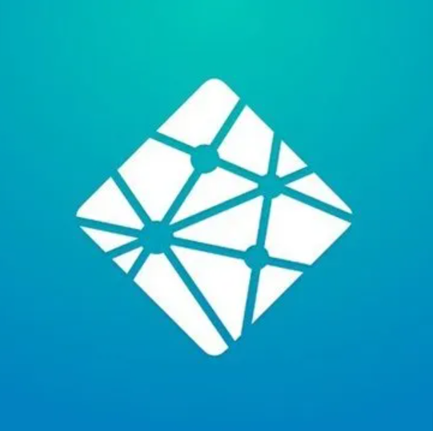
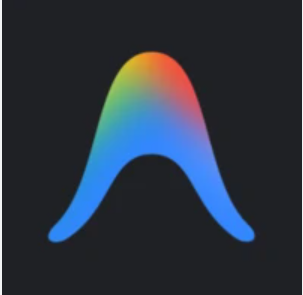

AI活用によるWEBサイト制作②
Manus や Google Stitch などの自律型AIエージェントで Web
サイトを組み立てる「発展編」です。
便利さを体験しつつ、トークン消費・プロンプト設計・静的サイトの制約という現場のリアルもあわせて押さえます。
本日の研修ねらい
AI活用によるWEBサイト制作またはアプリ開発をする
Day 9 では、Manus や Google Stitch のような自律型AIエージェントを使って、1人でWebサイトを構築・公開する流れを体験します。そのうえで、AIに頼り切ったときに必ずぶつかる「現実の壁」もきちんと学びます。
AIは「魔法の杖」ではなく、強力な「道具」です
動画では「センス不要」「プロンプトを投げるだけ」と紹介されがちですが、実際には正しく使うためのコツが必要です。
今日は「便利さ」と「落とし穴」の両方を正直にお伝えします。焦らずに、自分のペースで進めましょう。
先輩受講生（野口さん）からの共有資料
本コースの受講生である野口さんが、AIとの対話（壁打ち）を通じて業務システムを自作した際のワークフロー図を共有してくれました。
「言葉で伝えにくいことは画像・見本で伝える」「まずは動くプロトタイプを作り、そこからフィードバックを重ねる」という、AI開発における最も重要なコツが視覚的に分かりやすくまとまっています。ぜひ参考にしてください！

AIエージェント活用
Manus・Stitch・Claude Cowork などの特徴と、「NotebookLM → Manus → 公開」までの王道フローを学びます。
現場のリアル
プロンプトの難しさ・トークン消費の罠・静的サイトの制約という3つの落とし穴を先に知っておきます。
公開とデバッグ
GitHub で公開し、動かない箇所を AI と一緒に直す「壊して直す」体験をします。
動画（前半）— 3本
サムネイルをクリックすると、このページ内で再生が始まります（Facadeパターン）。
共有された自律型AIエージェント（4ツール）
それぞれ得意分野と料金体系が違います。全部使う必要はありません。1つに絞って触ってみるだけで十分です。

Manus 招待リンク（500クレジット付与）
コース内で Manus を試す場合は、以下の招待リンクから登録するとクレジットが追加で付与されます。
https://manus.im/invitation/PV1EDNPVRBRUAQ?...（クリックで開く）
制作〜公開までの王道フロー（2ルート）
ツールを組み合わせて、「企画 → 制作 → 公開」を一気通貫で進めます。
ルートA：ノンコード一気通貫（初心者向け）
ルートB：UI特化・開発者寄り

NetlifyWEB公開【絶景カフェ開業・アイデアメモ（個人用）】のソースを基盤として、その他のソースを分析し、競合他社と差別化できて人気店になれる、沖縄の海沿いカフェのWebサイト構成案を作成してください。各セクションのコピーライティング、配置する画像の指示も含めて、詳細な設計図を出力してください。
以下の構成案に基づいて、Webサイトを作成してください。必要な画像は作成して、テキストのボリュームを増やす必要がある場合は設計図に基づき作成してください。
プロのWebデザインの専門家として、20代〜30代の女性をターゲットにした、隠れ家カフェの洗練された温かみのあるサイトをデザインしてください。メインカラーは落ち着いたアースカラーで、ナチュラルな雰囲気を強調してください。
⚠️ 現場のリアル：AIで作るときの3つの落とし穴
動画の中では伝えきれない「実際に触ると必ずぶつかる現実」です。先に知っておくだけで、挫折を大きく減らせます。
① 「詳細なプロンプトを書くだけ」…が、そもそも難しい
「センス不要」「指示を投げるだけで簡単」と紹介されがちですが、そもそも非エンジニアがいきなり精度の高い指示を書けるなら苦労しません。
AIに伝わるプロンプトには、国語力だけでなく、「エンジニア的な表現の仕方」や「根本的なエンジニアリング知識」が不可欠です。これらがないと、AIとの事前の壁打ちですら無駄なやり取り（ラリー）が増えたり、そもそも明後日の方向に開発が進んでしまう危険性があります。
💡 対策：だからこそ Day 7・8 で学んだ「Webの基礎知識」が活きます。さらに、最初は NotebookLM のような「考えを整理してくれるAI」で構成を固めてから、Manus などの「実行AI」に渡す二段構えがおすすめです。
② トークン消費の罠 ― 無課金でも有料版でも、あっという間に使い切る
これが最も見落とされがちなポイントです。AIには「利用制限（トークン）」という見えない時間制限があります。
特に以下をやると、無料枠はもちろん、有料プランや Antigravity ですら数時間で上限に引っかかります：
- 欲張って大量の機能を一度に詰め込む
- 「なんか違う」「もっといい感じに」という曖昧な指示で延々と修正を繰り返す
- 壁打ち・設計・実装・デバッグを1つのAIツールで全部やろうとする
💡 対策：目的ごとに使うAIツール（エージェント）を使い分けるのがコツです。
① 壁打ちや設計は ChatGPT や Gemini で済ませる。（※ コーディングに Claude Code や Cursor(Claudeモデル)
を使う場合、Web版のClaudeとトークン消費枠が共通になるため、Web版Claudeで壁打ちをすると節約にならない点に注意！）
② 実装のみを、無料から使える Antigravity や、有料の Claude Code、Cursor などのコーディング特化エージェントに任せる。
③ 静的サイトの制約 ― GitHub Pages では「動く機能」は動かない
GitHub Pages や Netlify の無料枠は「静的サイト」専用です。HTML・CSS・JavaScript（画面の見た目）は動きますが、サーバー側の処理が必要なもの（ログイン・DB保存・決済・外部API連携など）はそのままでは動きません。
AIに「問い合わせフォームを作って」と頼むと、メール送信サーバーを前提にしたコードを返してくるため、そのままデプロイしてもボタンを押しても何も起きないという事故が起こります。
💡 対策：AIへの指示の最初に「ネガティブプロンプト（制約条件）」を明示すること。具体例は下の実習セクションを参照。
実習：制約条件付きでWEBサイトを作ってみよう
- きちんと動くWEBサイトを作る
- 公開環境に合わせた制約条件プロンプトを覚える
- 目標達成のための制作時間にする
静的サイト（OK）と動的サイト（NG）の切り分け
静的サイトで「できる」こと
- 画面の見た目・アニメーション
- ページ遷移・タブ切り替え
- クリックで表示を変える程度のJS
- YouTube・地図の埋め込み
静的サイトでは「動かない」こと
- 問い合わせフォーム（メール送信）
- ログイン・会員登録
- データベースへの保存
- 決済・外部API呼び出し（鍵が必要なもの）
Gemini (Canvas) にネガティブプロンプト付きで指示を出す
依頼の冒頭に「静的サイト前提・サーバー処理禁止・外部API依存を避ける」を必ず明示します。
以下の条件を厳守してください。
・GitHub Pages で公開する静的サイト前提（HTML/CSS/JavaScript のみ）
・サーバー処理は禁止（Node.js / PHP / Python などのバックエンドは使わない）
・外部APIキーが必要な機能は避ける
・問い合わせフォームは外部サービス（Google Forms 等）への誘導リンクに置き換える
詳細な共有プロンプトは Googleドキュメント を参照。
完成した HTML を GitHub で公開する
Day 8 で扱った GitHub Pages の手順をそのまま使います。ブランチは main、Source
は「ブランチからデプロイする」。
挙動がおかしかったら AI でデバッグ
不具合の部分だけをピンポイントで AI に共有し、修正版をもらって再度公開します（詳細は後半タブへ）。
ここから先が難しければ、前半だけで十分です
後半は「作ったサイトを直す・公開する」実践編です。動画と同じ手順を完璧にこなす必要はありません。
詰まったら Day 8 の Gemini Canvas（共有URL） や Netlify（ドラッグ＆ドロップ）
に戻って「公開までこぎつける」ことを優先してください。
動画（後半）— 1本
サムネイルをクリックするとページ内で再生されます。
📘 ガチ勢向け：Claude Code マスタークラス
このセクションは「使い込みたい人向け」です（任意）
動画でも触れられていたとおり、最初はとっつきやすさ優先。Gemini Canvas や Manus
といったブラウザで完結するツールから始めるのが正解です。
「もっと本格的に使い込みたい」「ターミナルも触ってみたい」という人向けのオプションパートなので、遠慮なく飛ばしてOKです。
Antigravity vs Claude Code の違い

Antigravityこのコースでも使っているAIコーディングエージェント。デスクトップアプリとして動作し、Google連携（ドライブ・スプレッドシート等）が得意。無料プランあり、有料プランは月額サブスク。
Claude Code
ターミナルで動く自律型AIエージェント。エディタに依存せず、ディレクトリ全体を読み、自らファイルを作成・修正し、テスト実行・エラー修正まで自動で進める。月額サブスクまたは従量課金で利用可能。
導入手順（4ステップ）
Node.js をインストール（前提条件）
公式サイト（nodejs.org）から LTS 版をダウンロード＆インストール。既に入っている人はスキップでOK。
ターミナルで Claude Code をグローバルインストール
認証（Anthropic アカウントの Billing 設定が必須）
ブラウザが開くので、Anthropic アカウントでログイン。事前に Billing（クレジットカード）登録を済ませておくこと。
作業ディレクトリに移動して起動
これで Claude Code が起動します。あとは対話で指示を出すだけ。
覚えるべき4つのスラッシュコマンド
Claude Code のセッション中に / から始めて打つ内部コマンドです。特に /compact
はコンテキスト節約に直結する最重要コマンドなので必ず覚えてください。
/compact
長くなった対話履歴を自動で圧縮・要約し、トークン消費を劇的に抑えます。作業が一区切りついたら必ず打つクセを。
/clear
現在のセッションの会話履歴を完全に消去し、真っ新な状態に戻します。別の作業に移るときに使用。
/cost
現在のセッションで消費したAPI利用料金（推定）を確認。精神安定剤としてこまめに打ちましょう。
/help
使えるコマンドの一覧を表示。最初に1回打っておくと、この4つ以外にも便利なコマンドがあることに気づけます。
課金爆発を防ぐ「トークン節約術」
Claude Code はコンテキスト管理がカギ
サブスクでも従量課金でも、会話が長引くと「過去のやり取り全部」を毎回送り直すため、レート制限や利用枠をあっという間に消費します。以下の4つを守るだけで快適さが段違いになります。
小さなディレクトリで起動
プロジェクトのルートで起動しない。修正したい機能があるサブディレクトリに cd してから
claude を打つ。無駄なファイル読み込みを防げます。
.claudeignore で除外
画像・ビルド成果物・ログファイルなど、AIに読ませる必要がないものは .claudeignore に記載して除外。 .gitignore と同じ書き方でOK。
/compact と /clear を打つ
対話が一区切りついたら /compact。別作業に移るなら /clear。このひと手間で1日の利用料金が数倍変わります。
ツールの役割を分けて使う
Claude Codeに設計から丸投げするのは非効率。壁打ち・設計はGemini（またはClaude Web）で済ませ、Claude Codeには「この指示書通りに実装して」と渡すのがAIディレクターの立ち回り。
ガチ勢の「究極のワークフロー」
AIツールの役割を分けることで、それぞれの強みを最大限に活かして開発速度を最大化できます。Cursor・Antigravity・Claude Codeは、どれも月額サブスク型で利用できます。
レビュー・デプロイは、そのときトークンに余裕のあるAIエージェントを任意に使い分けてOK。特定のツールに縛る必要はありません。
エラーが出たときの「トークンを無駄にしない」デバッグ手順
前半で学んだ「トークン消費の罠」を避けるために、デバッグは最小単位で切り出して聞くのが鉄則です。
症状を一行で書き出す
❌「なんかおかしい」→ ⭕「ボタンを押しても何も反応しない／画像が表示されない／レイアウトがスマホで崩れる」のように具体化します。
関係するコードだけをAIに渡す
HTML全ファイルを丸ごと貼ると、それだけで膨大なトークンを消費します。該当するタグの前後10〜30行に絞って質問しましょう。
ブラウザの開発者ツール（F12）でエラーを見る
Console タブに赤字で出るエラーメッセージをそのままコピーしてAIに渡すのが最短ルートです。
修正版をGitHubで上書きして再公開
Day 8 と同じく main ブランチに push すれば、数分で反映されます。
やりがちNG：「全部直して」とお願いする
「全部見直して全部直して」は、AIに大量のトークンを消費させる代表例です。1つの症状＝1つの質問を守るだけで、利用制限への到達速度が大きく変わります。
公開手段はこの2つでOK
GitHub Pages（Day 8 の手順）
リポジトリに push → Settings → Pages → main ブランチ選択、で数分後に公開。更新のたび自動で反映されます。
TODAY's MISSION
AIエージェントの便利さと「落とし穴」の両方を体験できたかを振り返りましょう。
今日のチェックリスト
-
STEP 01: 4つのAIエージェントの違いを把握した
Manus・Claude Cowork・Google Stitch・Claude Code の得意分野と料金感を説明できればチェック。
-
STEP 02: 「3つの落とし穴」を自分の言葉で言える
プロンプトの難しさ・トークン消費の罠・静的サイトの制約。この3つを他人に説明できればチェック。
-
STEP 03: ネガティブプロンプトを添えて1サイト作った
「静的サイト前提」「サーバー処理禁止」を添えて、Gemini Canvas または Manus で 1 ページ作れたらチェック。
-
STEP 04: 公開までこぎつけた（Netlify か GitHub）
URLを1つでも発行できたら大成功。完璧じゃなくていい、「公開した」という事実が大事です。
次のステップ（Day 10）
次は Web サイトから一歩進んで、アプリケーション開発に踏み込みます。今日学んだ「AIと賢く付き合う」感覚がそのまま活きます。